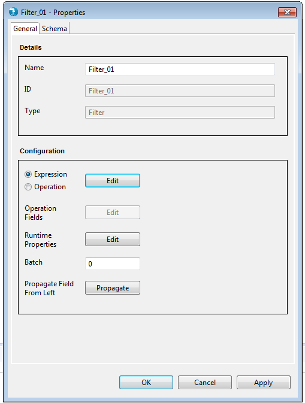
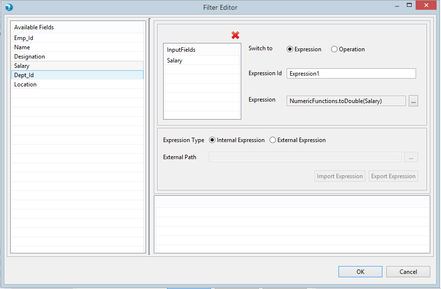
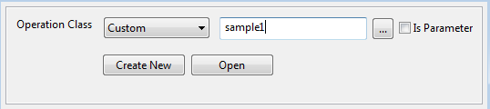
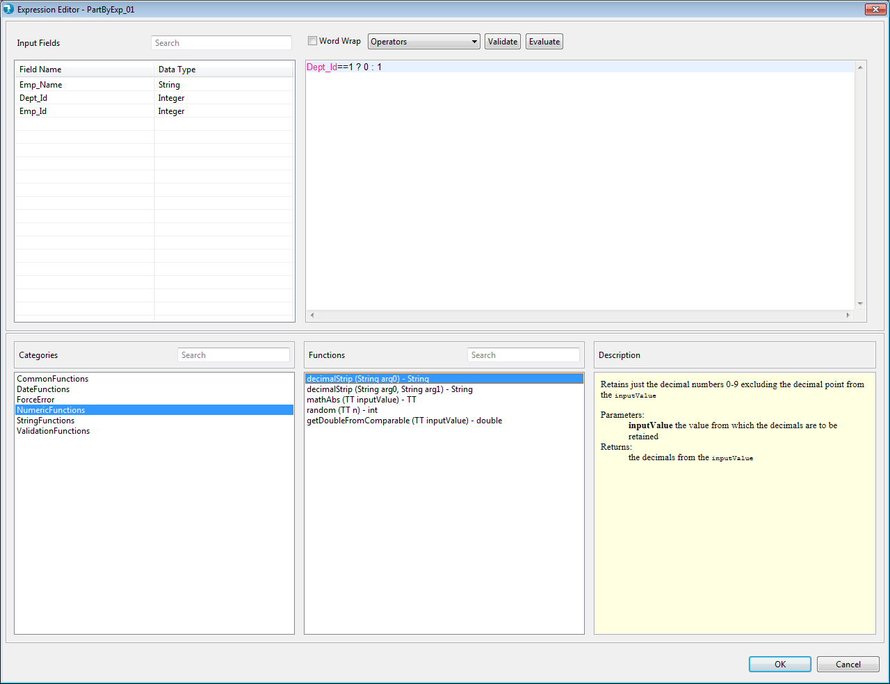
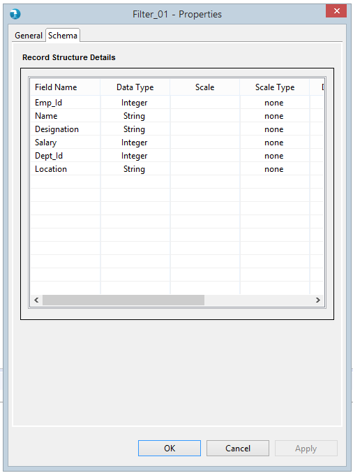
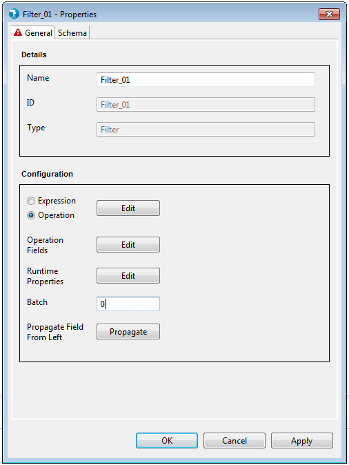
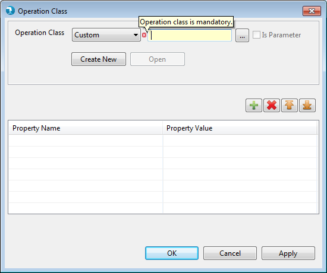
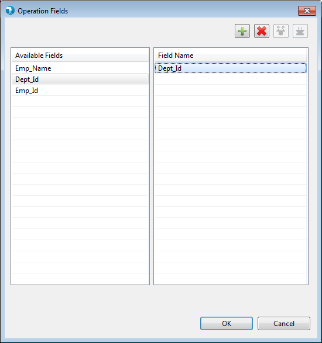

Filter Properties
Properties for the Filter component can be viewed by Double click->component on canvas. The properties contains only a 'General' tab. Common and mandatory properties are present in the General tab.

Display
Configuration

Operation Class : Selecting Operation opens up a grid for the user to select for an existing operation class or create a new one. The operation class name can be parameterized which will be resolved at runtime. Click on Operation Class to know more about creating and using Standard classes here.

Expression Editor : Selecting Expression opens expression editor window. Click on Expression Editor to know more about Expression Editor .

Externalizing Filter Transformations : Externalizing Transformations feature enables user to externalize expression, class and output fields of Operation Editor. Its enhancing generalizing capabilities of all Transform components and providing options to user for generic job creation.
For more details regarding externalizing expression, class and output fields of Operation Editor, refer Externalizing Transformations.


Schema is mandatory for partition by expression component. Schema tab defines the record format on the out port of the partition by expression component. A field in schema has multiple attributes as described below.
Validations for the Filter component are in place for each property present on the Properties window.

General Properties:

